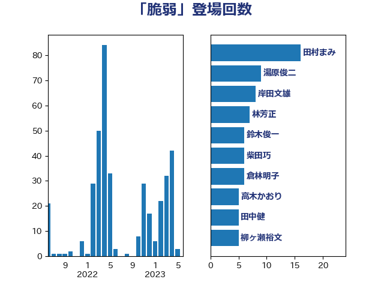

単語「脆弱」

| 田村まみ | 国民民主党 | 20 回 |
| 茂木敏充 | 自由民主党 | 15 回 |
| 倉林明子 | 日本共産党 | 10 回 |
| 湯原俊二 | 立憲民主党 | 9 回 |
| 柳ヶ瀬裕文 | 日本維新の会 | 6 回 |
| 梶山弘志 | 自由民主党 | 6 回 |
| 井上哲士 | 日本共産党 | 5 回 |
| 山崎誠 | 立憲民主党 | 5 回 |
| 田中健 | 国民民主党 | 5 回 |
| 西村康稔 | 自由民主党 | 5 回 |
| 古屋範子 | 公明党 | 4 回 |
| 宮本徹 | 日本共産党 | 4 回 |
| 柴田巧 | 日本維新の会 | 4 回 |
| 福島みずほ | 社会民主党 | 4 回 |
| 萩生田光一 | 自由民主党 | 4 回 |
| 足立敏之 | 自由民主党 | 4 回 |
| 青柳仁士 | 日本維新の会 | 4 回 |
| 中島克仁 | 立憲民主党 | 3 回 |
| 宮本岳志 | 日本共産党 | 3 回 |
| 尾身朝子 | 自由民主党 | 3 回 |
| 林芳正 | 自由民主党 | 3 回 |
| 玉木雄一郎 | 国民民主党 | 3 回 |
| 緒方林太郎 | 無所属 | 3 回 |
| 赤羽一嘉 | 公明党 | 3 回 |
| 野上浩太郎 | 自由民主党 | 3 回 |
| 上川陽子 | 自由民主党 | 2 回 |
| 丸川珠代 | 自由民主党 | 2 回 |
| 井上信治 | 自由民主党 | 2 回 |
| 今井絵理子 | 自由民主党 | 2 回 |
| 伊波洋一 | 無所属 | 2 回 |
| 伊藤孝恵 | 国民民主党 | 2 回 |
| 伊藤岳 | 日本共産党 | 2 回 |
| 佐藤英道 | 公明党 | 2 回 |
| 佐藤茂樹 | 公明党 | 2 回 |
| 勝部賢志 | 立憲民主党 | 2 回 |
| 吉田統彦 | 立憲民主党 | 2 回 |
| 大串博志 | 立憲民主党 | 2 回 |
| 大塚耕平 | 国民民主党 | 2 回 |
| 小沢雅仁 | 立憲民主党 | 2 回 |
| 小熊慎司 | 立憲民主党 | 2 回 |
| 山添拓 | 日本共産党 | 2 回 |
| 岸田文雄 | 自由民主党 | 2 回 |
| 川合孝典 | 国民民主党 | 2 回 |
| 末松信介 | 自由民主党 | 2 回 |
| 枝野幸男 | 立憲民主党 | 2 回 |
| 河野義博 | 公明党 | 2 回 |
| 牧山ひろえ | 立憲民主党 | 2 回 |
| 田村智子 | 日本共産党 | 2 回 |
| 細田健一 | 自由民主党 | 2 回 |
| 美延映夫 | 日本維新の会 | 2 回 |
| 舞立昇治 | 自由民主党 | 2 回 |
| 藤田文武 | 日本維新の会 | 2 回 |
| 野田聖子 | 自由民主党 | 2 回 |
| 鈴木俊一 | 自由民主党 | 2 回 |
| 音喜多駿 | 日本維新の会 | 2 回 |
| 高良鉄美 | 無所属 | 2 回 |
| 麻生太郎 | 自由民主党 | 2 回 |
| おおつき紅葉 | 立憲民主党 | 1 回 |
| たがや亮 | れいわ新選組 | 1 回 |
| 上田清司 | 国民民主党 | 1 回 |
| 中村裕之 | 自由民主党 | 1 回 |
| 佐藤正久 | 自由民主党 | 1 回 |
| 吉良よし子 | 日本共産党 | 1 回 |
| 嘉田由紀子 | 無所属 | 1 回 |
| 国光あやの | 自由民主党 | 1 回 |
| 國重徹 | 公明党 | 1 回 |
| 坂本哲志 | 自由民主党 | 1 回 |
| 城井崇 | 立憲民主党 | 1 回 |
| 塩川鉄也 | 日本共産党 | 1 回 |
| 塩村あやか | 立憲民主党 | 1 回 |
| 大島敦 | 立憲民主党 | 1 回 |
| 大石あきこ | れいわ新選組 | 1 回 |
| 大野泰正 | 自由民主党 | 1 回 |
| 太田房江 | 自由民主党 | 1 回 |
| 室井邦彦 | 日本維新の会 | 1 回 |
| 宮崎雅夫 | 自由民主党 | 1 回 |
| 宮路拓馬 | 自由民主党 | 1 回 |
| 小倉將信 | 自由民主党 | 1 回 |
| 小宮山泰子 | 立憲民主党 | 1 回 |
| 小沼巧 | 立憲民主党 | 1 回 |
| 小泉進次郎 | 自由民主党 | 1 回 |
| 尾崎正直 | 自由民主党 | 1 回 |
| 山口壯 | 自由民主党 | 1 回 |
| 山口那津男 | 公明党 | 1 回 |
| 山岡達丸 | 立憲民主党 | 1 回 |
| 山岸一生 | 立憲民主党 | 1 回 |
| 山本剛正 | 日本維新の会 | 1 回 |
| 山田勝彦 | 立憲民主党 | 1 回 |
| 山田美樹 | 自由民主党 | 1 回 |
| 岡本三成 | 公明党 | 1 回 |
| 岸真紀子 | 立憲民主党 | 1 回 |
| 川崎ひでと | 自由民主党 | 1 回 |
| 川田龍平 | 立憲民主党 | 1 回 |
| 工藤彰三 | 自由民主党 | 1 回 |
| 市村浩一郎 | 日本維新の会 | 1 回 |
| 平井卓也 | 自由民主党 | 1 回 |
| 庄子賢一 | 公明党 | 1 回 |
| 徳永エリ | 立憲民主党 | 1 回 |
| 志位和夫 | 日本共産党 | 1 回 |
| 打越さく良 | 立憲民主党 | 1 回 |
| 掘井健智 | 日本維新の会 | 1 回 |
| 斎藤嘉隆 | 立憲民主党 | 1 回 |
| 木村次郎 | 自由民主党 | 1 回 |
| 杉本和巳 | 日本維新の会 | 1 回 |
| 松本尚 | 自由民主党 | 1 回 |
| 柚木道義 | 立憲民主党 | 1 回 |
| 柳本顕 | 自由民主党 | 1 回 |
| 梅谷守 | 立憲民主党 | 1 回 |
| 森屋隆 | 立憲民主党 | 1 回 |
| 武井俊輔 | 自由民主党 | 1 回 |
| 池下卓 | 日本維新の会 | 1 回 |
| 池田佳隆 | 自由民主党 | 1 回 |
| 浅田均 | 日本維新の会 | 1 回 |
| 清水真人 | 自由民主党 | 1 回 |
| 渡辺周 | 立憲民主党 | 1 回 |
| 熊野正士 | 公明党 | 1 回 |
| 牧原秀樹 | 自由民主党 | 1 回 |
| 甘利明 | 自由民主党 | 1 回 |
| 田名部匡代 | 立憲民主党 | 1 回 |
| 田村貴昭 | 日本共産党 | 1 回 |
| 田畑裕明 | 自由民主党 | 1 回 |
| 畦元将吾 | 自由民主党 | 1 回 |
| 石井正弘 | 自由民主党 | 1 回 |
| 石井章 | 日本維新の会 | 1 回 |
| 石原正敬 | 自由民主党 | 1 回 |
| 石垣のりこ | 立憲民主党 | 1 回 |
| 石橋通宏 | 立憲民主党 | 1 回 |
| 石田昌宏 | 自由民主党 | 1 回 |
| 礒崎哲史 | 国民民主党 | 1 回 |
| 福山哲郎 | 立憲民主党 | 1 回 |
| 福岡資麿 | 自由民主党 | 1 回 |
| 福重隆浩 | 公明党 | 1 回 |
| 紙智子 | 日本共産党 | 1 回 |
| 緑川貴士 | 立憲民主党 | 1 回 |
| 若宮健嗣 | 自由民主党 | 1 回 |
| 西岡秀子 | 国民民主党 | 1 回 |
| 谷合正明 | 公明党 | 1 回 |
| 谷田川元 | 立憲民主党 | 1 回 |
| 赤木正幸 | 日本維新の会 | 1 回 |
| 赤池誠章 | 自由民主党 | 1 回 |
| 遠藤敬 | 日本維新の会 | 1 回 |
| 重徳和彦 | 立憲民主党 | 1 回 |
| 鈴木英敬 | 自由民主党 | 1 回 |
| 長妻昭 | 立憲民主党 | 1 回 |
| 青山大人 | 立憲民主党 | 1 回 |
| 青木一彦 | 自由民主党 | 1 回 |
| 高木かおり | 日本維新の会 | 1 回 |
| 高見康裕 | 自由民主党 | 1 回 |
| 鬼木誠 | 立憲民主党 | 1 回 |